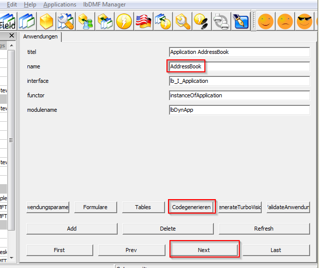

Was ist die Zuelplattform, in der die Software laufen soll?

Welches Framework steht in der Plattform zur Verfügung?

Ja, da hat jemand schon ein Template gebaut. Ich kann mir schnell einen Prototypen für die Cloud bauen!
Erstellen Sie Ihren Code mit:
Template installer
Das Werkzeug, welches den Zielcode als Template darstellt
Sie brauchen auch:
Distributed Multiplatform Framework
Das Werkzeug, welches den Code generiert
Sowie ArgoUML:
UML Modeling Tool
Das Tool mit dem Sie Ihre Ideen designen
Und:
DevExpress Universal Subscription DevExpress Universal Subscription | Mit allen DevExpress .NET Entwicklungswerkzeuge und technischen Support.
CAB DevExpress Codegenerator Compilation ist eine Zusammenstellung von Elementen, die in der Summe das Erstellen einer Software in einer bestimmten Programmiersprache erlaubt. Sie können diese Software mittels Setup auf Ihrem Rechner installieren. Da der Zielcode das .NET Framework verwendet, existiert nur eine Version für das Windows Betriebssystem.
Sie benötigen zur Ansteuerung des Generators das Distributed Multiplatform Framework auf der gleichen Maschine.

Legen wir los. Nachdem feststeht, dass die Zielsoftware in .NET unter der Windows Plattform laufen soll, fiel die Entscheidung, auf professionelle Produkte zu setzen:

Die in dem Bild dargestellte Software soll nun generiert werden. Diese Software verwendet folgende Frameworks: DevExpress, Composite Application Block.
Beide stellen in Ihrer Aufgabenerfüllung eine professionelle Lösung dar.
DevExpress erfüllt die Anforderungen an ein gutes Aussehen sowie reichhaltige Funktionalität und CAB stellt erfüllt die wichtige Anforderung an eine Modulare Software.
In der Compilation als Codegenerator Zusammenstellung erfüllen Sie diese Anforderungen auf Knopfdruck.
Generieren von Code:
Die Anwendung wurde zuvor als UML Modell erstellt. Dieses wird in die Prototyping Anwendung importiert. Zu diesem Zeitpunkt können Sie sich ein grobes Bild mit ein paar Beispieldaten machen.
Sind Sie zufrieden mit dem, was Sie an Beispieldaten eingeben können, bleibt nur noch das anwerfen des Generators.

In dem links dargestellten Programm sehen Sie, welche Aktionen notwendig sind um den Generator anzuwerfen. Wählen Sie die richtige Anwendung durch den 'Next' Button aus. Sie sehen im Beispiel AddressBook, welches vollständig auf CodeProject die Erstellung eines Addressbuches illustriert.
Ist die Anwendung ausgewählt, drücken Sie Codegenerieren. Folgen Sie wie in dem Artikel beschrieben einmalig mit der Auswahl des Ausgabeordners und dann mit der Auswahl des Generator Templates.
Haben Sie den Code generiert, können Sie diesen nun genauer anschauen.
Betrachten und Übersetzen des generierten Codes:
Starten Sie hierzu Visual Studio und öffnen die Solution oder öffnen diese direkt über den Ihren Filemanager. Sie sollten dieses Programm kennen, wenn Sie für das .NET Framework Software erstellen wollen.
Zur Übersetzung der eigentlichen Anwendung sollten Sie zuerst die Solution StsService übersetzen.
In Betriebnehmen der Software:
Die Inbetriebname erfordert einige Anpassungen, die den Umfang für die Produktbeschreibung sprengen. Kurz gesagt müssen Sie die Services auf Ihren Servern installieren und konfigurieren. Hierzu gehören Zertifikate, Enpunktanpassungen, Ports, Firewallregeln usw.
Fazit:

Sie haben schnell eine professionell erscheinende Anwendung erstellt. Diese verwendet einen STS Service zur Authentifizierung und ist somit in drei Komponenten aufgeteilt. Den Client, einen Backend für den STS Service, sowie einen für das Backend der Anwendung selbst.
Da hier die Erstellung der StsManagement Anwendung beschrieben wurde, stellt dies eine weitere Konstellation dar. Die Clientanwendung spricht die Daten des STS über einen separaten Backend an, nicht aber über den Sts Service selbst.
Die Erstellung der Business Anwendungen ist ebenso mit diesen Schritten möglich, was Sie gerne ausprobieren können. Das Beispiel auf CodeProject ist mit einer früheren Version des Generators erstellt worden. Im einem Folgeartikel geht es erst um eine verteilte Anwendung.
Weitere Bilder:

Hier sehen Sie die StsManagement Anwendung, wie Sie tatsächlich genannt wird und in einem entsprechendem UML Modell existiert:
Es sind Zertifikate für zwei Services registriert, die durch den STS Service für die eingerichteten Nutzer Accounts verfügbar gemnacht wurden. Beide Anwendungen, der STS Service und die Stsmanagement Anwendung sind mittels eines Codegenerator Templates erstellt worden. Der Screenshot ist in einer FullHD Auflösung erstellt worden und kann dementsprechend vergrößert werden.
Weiter wird pro Anwendung der entsprechende Service generiert, auf den durch die Anwendung zugegriffen wird.
Ein STS Service ist ein Security Token Service, welcher oben genannte Tokens ausstellt, nachdem sich ein Benutzer erfolgreich bei diesem Authentifiziert hat.
CodeProjekt Artikel 1 beschreibt grundlegend den Modellierungsvorgang und die Codegenerierung. CodeProjekt Artikel 2 beschreibt die Erweiterung der Modellierungsfähigkeiten. CodeProjekt Artikel 3 beschreibt die Architektur einer verteilten Anwendung und wie man Templates um Fähigkeiten von verteilter Software anreichert.